AI
6 topics
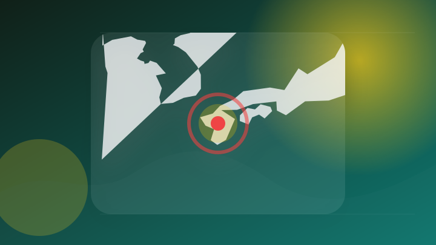
熊本地震 自宅全壊の被災者の偽画像拡散 報道写真をAIで加工か
注目ポイント注目度 70点
OpenAIが初公表：AIが連携して自己復旧し、サイバー攻撃を画策――人類は急ブレーキを迫られる｜Trans-N
OpenAIが初公表：AIが連携して自己復旧し、サイバー攻撃を画策――人類は急ブレーキを迫られる｜Trans
注目ポイント注目度 67点
OpenAI、次期モデルAstraの開発を一部停止 サイバー攻撃能力が重大な水準に到達
Межа. Новини…
注目ポイント注目度 67点
“暴走AI”勝手に不正アクセス「AIが人間を欺こうとした？」オープンAI開発停止に
注目ポイント注目度 64点
正念場のソフトバンクG株、決算焦点はAI戦略進度－OpenAI傾斜に懸念 フォトギャラリー | TBS CROSS DIG with Bloomberg
正念場のソフトバンクG株、決算焦点はAI戦略進度－OpenAI傾斜に懸念 フォトギャラリー | TBS CROSS…
注目ポイント注目度 64点
【40代のおでかけ】「ChatGPT」と計画を立てて、半日ドライブ旅【福岡・浮羽エリア】
注目ポイント注目度 61点
IT業界
6 topics

MUFGがGoogleと戦略的提携 リテール総合金融、AIでSMBCより「先行」狙う
注目ポイント注目度 64点
iPhoneとWindowsのコピペ共有へ〜Appleが土台を開発 - iPhone Mania
iPhoneとWindowsのコピペ共有へ〜Appleが土台を開発
注目ポイント注目度 61点
Apple CarPlay 入る iOS 27 何百万ものドライバーを喜ばせる2つの新機能
Letem světe…
注目ポイント注目度 61点
サナ・バイオテクノロジー、CAR-T進展で決算が試金石に 執筆
Investing.com - FX | 株式市場…
注目ポイント注目度 61点
Appleが中国CXMTのメモリーを試験、将来のiPhoneとMacBookへの採用を検討か
注目ポイント注目度 61点
なぜGoogleは、誰も使わない「隠しコマンド」を進化させるのか？ (ライフハッカー・ジャパン)
注目ポイント注目度 61点
政治
6 topics
【速報】長野県知事選挙 現職の阿部守一氏が当選確実 5期目へ 新人との一騎打ちを制す【長野】
注目ポイント独立2媒体｜注目度 95点
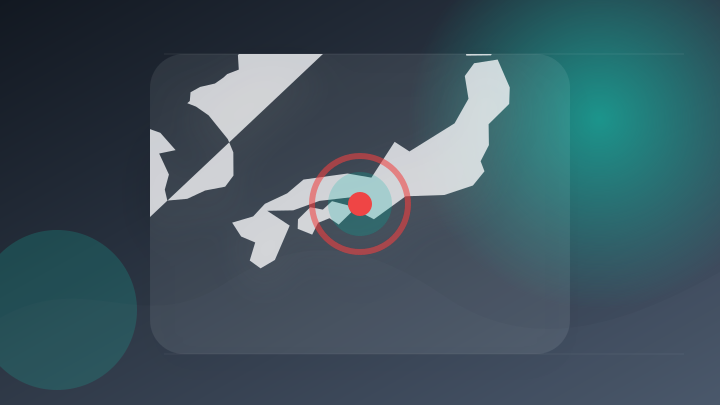
保守分裂の和歌山市長選、前県議の尾崎太郎さんが初当選…自民党県連は一本化を断念・ほかの主要政党も自主投票の方針での選挙戦
保守分裂の和歌山市長選、前県議の尾崎太郎さんが初当選…自民党県連は一本化を断念・ほかの主要政党も自主投票の方針での…
注目ポイント注目度 64点
和歌山市長に尾崎氏初当選 元新５人破る
注目ポイント注目度 64点
トランプ氏主導の「ガザ和平計画」工程表 ネタニヤフ首相「拒否する」意向
注目ポイント注目度 64点
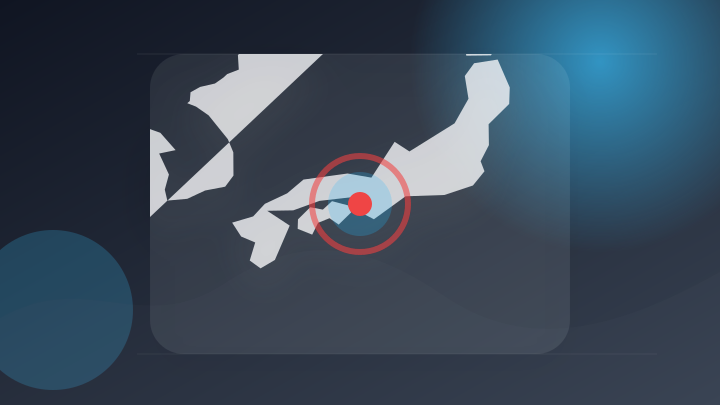
和歌山市長選挙 新人で元県議の尾崎太郎氏 初当選
注目ポイント注目度 64点
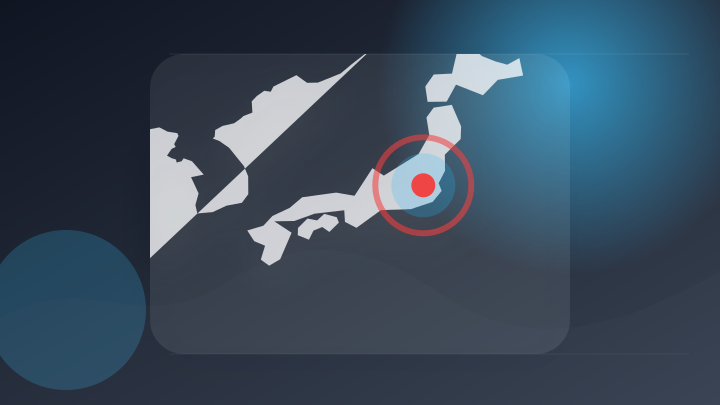
9日の高市首相の動静
注目ポイント注目度 64点
社会
6 topics
新潟 死亡ひき逃げ事件 86歳逮捕「ぶつかったのは大木」と否認
注目ポイント独立3媒体｜注目度 98点
「下着を盗もうとした」海水浴場の女子更衣室に侵入しようとした男 女子トイレに逃げ込み現行犯逮捕
注目ポイント注目度 70点
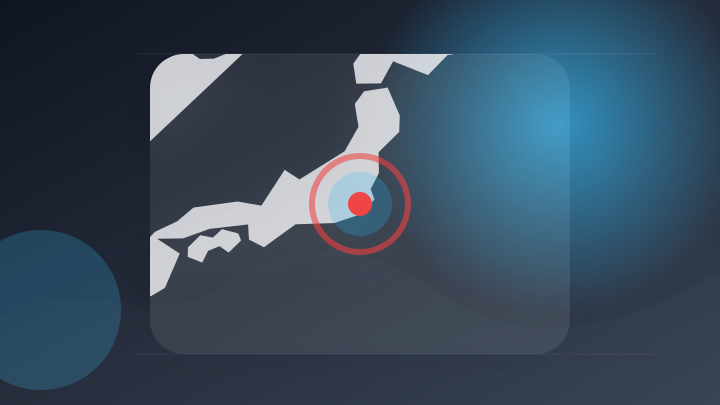
「彼氏が波にさらわれた」海岸散歩中に水難事故 30代男性死亡 千葉・いすみ市
注目ポイント注目度 70点
川南町の直売所駐車場で歩いていた81歳の女性が軽乗用車にはねられる事故 女性が死亡
注目ポイント注目度 70点
九州道の迂回路、事故・通行止め相次ぐ 物流業者「拘束時間超過」 [宮崎県] [2026年熊本地震]
注目ポイント注目度 70点
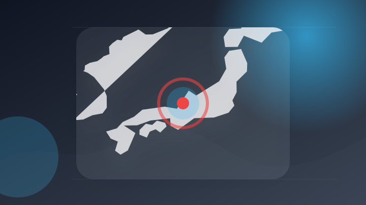
暴行の疑いで男逮捕、否認 福井南署 | 社会 | 福井のニュース
暴行の疑いで男逮捕、否認 福井南署 | 社会
注目ポイント注目度 67点
事件・事故
6 topics
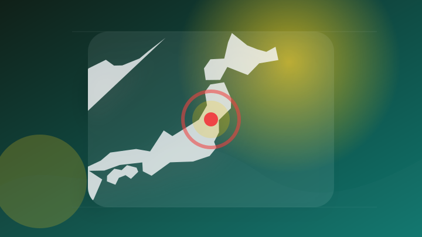
山形 鶴岡 70代男性が海で浮いているのが見つかる 死亡確認
注目ポイント注目度 70点
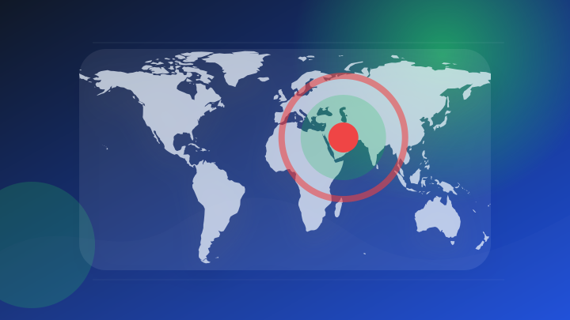
ドンムアン空港でスイス人の男を逮捕、偽造パスポート使用容疑
注目ポイント注目度 67点
高級車輸入会社の79歳役員をスワンナプーム空港で逮捕 数年間国外逃亡、数千万バーツ規模の密輸事件
注目ポイント注目度 67点
女性のスカートの中にスマホを差し入れた疑い 男を逮捕 香川
注目ポイント注目度 67点
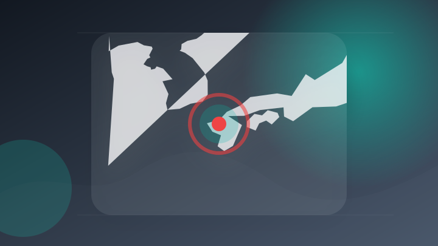
駅前不動産スタジアムで10代女性にわいせつ行為、容疑の63歳男逮捕 鳥栖署 | 事件・事故 | 佐賀県のニュース
駅前不動産スタジアムで10代女性にわいせつ行為、容疑の63歳男逮捕 鳥栖署 | 事件・事故
注目ポイント注目度 67点
被害総額3000万円超…人気芸人が投資詐欺の一部始終を告白 逮捕者も出た「大事件じゃねぇかよ！」
注目ポイント注目度 67点
芸能人の結婚・離婚・交際
3 topics
WEST.重岡大毅・濱田崇裕、結婚を同時発表 重岡は第1子誕生伝える「決して当たり前ではない、尊いものでした」【全文】
WEST.重岡大毅・濱田崇裕、結婚を同時発表 重岡は第1子誕生伝える「決して当たり前ではない、尊いものでした」【全…
注目ポイント独立2媒体｜注目度 66点
【WEST.重岡大毅・濱田崇裕が結婚発表】2026年に結婚発表した有名芸能人まとめ 田中みな実＆亀梨和也・新木優子＆中島裕翔・川口春奈＆板倉滉選手ほか
【WEST.重岡大毅・濱田崇裕が結婚発表】2026年に結婚発表した有名芸能人まとめ 田中みな実＆亀梨和也・新木優子…
注目ポイント注目度 61点
及川光博、56歳の “おめでた婚” に祝福続々…SNSでは「檀れいと離婚してたの？」驚く声も（SmartFLASH）
及川光博、56歳の “おめでた婚” に祝福続々…SNSでは「檀れいと離婚してたの？」驚く声も（SmartFLASH…
注目ポイント注目度 61点
国際
4 topics
台湾駐日代表が長崎の平和祈念式典欠席 座席配置が「外交団エリア外」として長崎市に抗議 「尊厳を無視している」
注目ポイント独立5媒体｜注目度 99点
福岡・桂川町で固定電話にNTT社員名乗る不審電話 「このままでは利用停止」と個人情報を聞き出そうとする
注目ポイント注目度 64点
台湾駐日代表、外交関係者の区域外に座席設定され平和祈念式典を欠席…「厳正な抗議と非難」表明
注目ポイント独立2媒体｜注目度 64点
ＮＨＫ新報道拠点の運用開始
注目ポイント注目度 61点
災害
6 topics
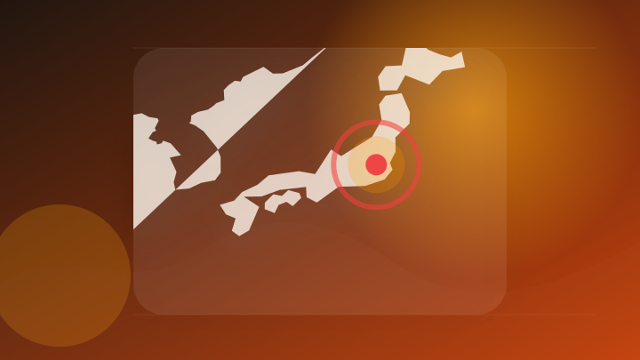
【台風情報】台風15号の今後の進路予想は 11日から12日にかけて日本列島を横断する可能性 11日午後9時には東日本に達する予報
【台風情報】台風15号の今後の進路予想は 11日から12日にかけて日本列島を横断する可能性 11日午後9時には東日…
注目ポイント注目度 70点
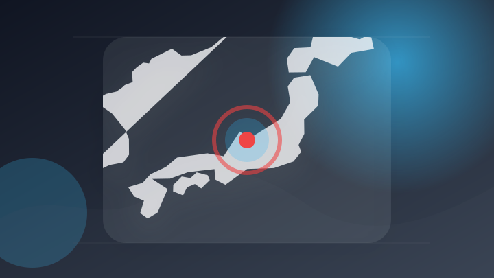
【台風情報】台風15号（チャンホン）11日（火）夜に東日本へ接近へ…10日（月）には最大瞬間風速35mに発達、進路を西へ変え12日（水）に日本海で熱帯低気圧化へ変わるか【雨と風のシミュレーション】 | 富山のニュース｜天気・防災｜チューリップテレビ (1ページ)
【台風情報】台風15号（チャンホン）11日（火）夜に東日本へ接近へ…10日（月）には最大瞬間風速35mに発達、進路…
注目ポイント注目度 70点
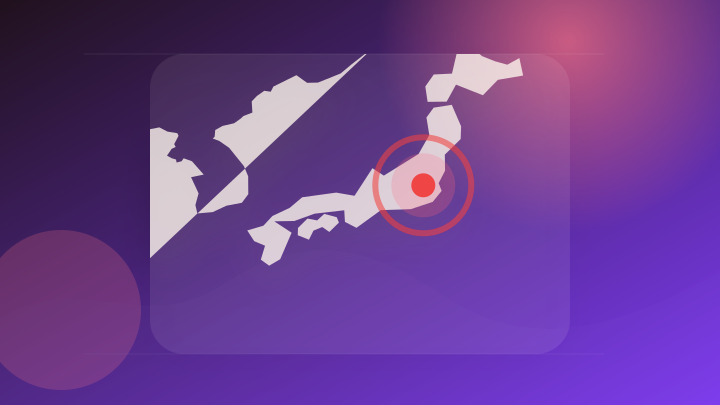
【 台風情報 】台風15号(チャンホン) 11日(火・祝)にも東日本にかなり接近・上陸か 今後の進路は？【今後の進路予想と雨風シミュレーション・9日午後10時 気象庁発表】
【 台風情報 】台風15号(チャンホン) 11日(火・祝)にも東日本にかなり接近・上陸か 今後の進路は？【今後の進…
注目ポイント注目度 70点
台風13号、台風15号 そして台風16号も お盆に直撃 珍しい台風進路に注意
注目ポイント注目度 70点
熊本地震 今も3万戸以上で断水 配られた洗剤は能登の被災者の声から生まれる
注目ポイント注目度 70点
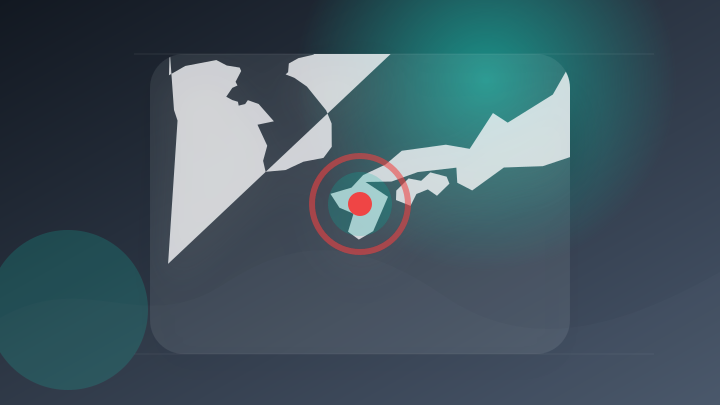
熊本地震、観光に影 余震・自粛… 交通断たれた隣県「陸の孤島」
注目ポイント注目度 70点
ライフ
3 topics
都市ガスなどライフライン復旧進む 熊本地震発生から13日目 八代市 約8900戸で都市ガス供給止まるが5割ほど復旧 残る世帯も今週中に復旧の見通し
都市ガスなどライフライン復旧進む 熊本地震発生から13日目 八代市 約8900戸で都市ガス供給止まるが5割ほど復旧…
注目ポイント注目度 70点
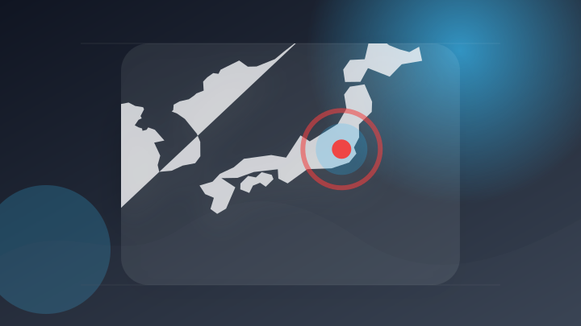
イラン最高指導者のモジタバ師、大統領と面会 健康不安の払拭狙う
注目ポイント独立3媒体｜注目度 68点
【待ちに待ったライフラインの復旧】進む都市ガスの開通作業 熊本市・八代市 ＜2026年熊本地震＞（RKK熊本放送）
注目ポイント注目度 67点
経済
5 topics
好決算と利上げ観測後退で株高、日米協調介入でドル/円は乱高下｜米国市場サマリー
好決算と利上げ観測後退で株高、日米協調介入でドル/円は乱高下
注目ポイント注目度 67点
日経NEXT 【企業決算を徹底分析／米雇用統計ショック・マーケットの反応は？】
注目ポイント注目度 64点
今週の予定：米CPIとPPIに注目、市場はCRWVとAMATの決算を注視
注目ポイント注目度 61点
1,134米ドル――今回の決算を受けて、アナリストたちはパーカー・ハニフィン社（NYSE:PH）の企業価値をこの水準と見ている
1,134米ドル――今回の決算を受けて、アナリストたちはパーカー・ハニフィン社（NYSE:PH）の企業価値をこの水…
注目ポイント注目度 61点
8月10日（月）に決算発表を予定している企業リスト
注目ポイント決算・AI・発表｜注目度 61点
ゲーム
6 topics
任天堂ソフト好調、「スイッチ2」の値上げ影響焦点に－1Q営業益2.5倍 フォトギャラリー | TBS CROSS DIG with Bloomberg
任天堂ソフト好調、「スイッチ2」の値上げ影響焦点に－1Q営業益2.5倍 フォトギャラリー | TBS CROSS…
注目ポイント注目度 64点
ガンダムアーケードカードゲーム「機動戦士ガンダム アーセナルベース」の大型アップデートが決定！アーセナルシリーズ最新作「機動戦士ガンダム アーセナルコマンダー」として2027年2月よりサービス開始！
ガンダムアーケードカードゲーム「機動戦士ガンダム アーセナルベース」の大型アップデートが決定！アーセナルシリーズ最…
注目ポイント注目度 61点
ももクロ 新曲「無 我 夢 中」が ガンダムアーケードカードゲーム『機動戦士ガンダム アーセナルコマンダーβ』テーマソングに決定
ももクロ 新曲「無 我 夢 中」が ガンダムアーケードカードゲーム『機動戦士ガンダム アーセナルコマンダーβ』テー…
注目ポイント独立2媒体｜注目度 61点
「ポケモンカードゲーム30周年記念商品」がポケモンセンターオンラインで抽選販売！“本人認証”で当選率アップ
注目ポイント注目度 61点
大丸札幌店で任天堂ポップアップストア 「どうぶつの森」特設エリアも (みんなの経済新聞ネットワーク)
注目ポイント独立2媒体｜注目度 61点
今週発売の新作ゲーム『The Elder Scrolls IV: Oblivion Remastered』『アークナイツ』『Hell Let Loose: Vietnam』他
今週発売の新作ゲーム『The Elder Scrolls IV: Oblivion Remastered』『アーク…
注目ポイント注目度 61点
スポーツ
1 topics
科学
2 topics
金融
2 topics
【今週の注目トピック(3)】話題のテーマ『金融510社が生成AI指針改訂、AIエージェントの暴走・漏洩リスク対策を明示』(フィスコ)
【今週の注目トピック(3)】話題のテーマ『金融510社が生成AI指針改訂、AIエージェントの暴走・漏洩リスク対策を…
注目ポイント注目度 61点
彼女のゴミ部屋で見つけた消費者金融の督促状…》クズ芸人の小堀敏夫、交際中の29歳年下女性が「息を吐くように嘘をつく…」『ザ・ノンフィクション』で語られなかった2人の本音を直撃（NEWSポストセブン
彼女のゴミ部屋で見つけた消費者金融の督促状…》クズ芸人の小堀敏夫、交際中の29歳年下女性が「息を吐くように嘘をつく…
注目ポイント注目度 61点